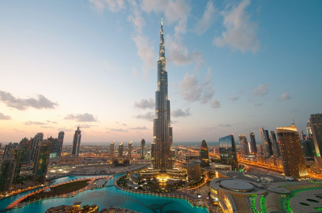
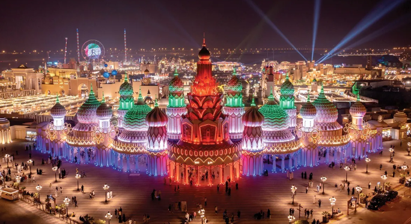
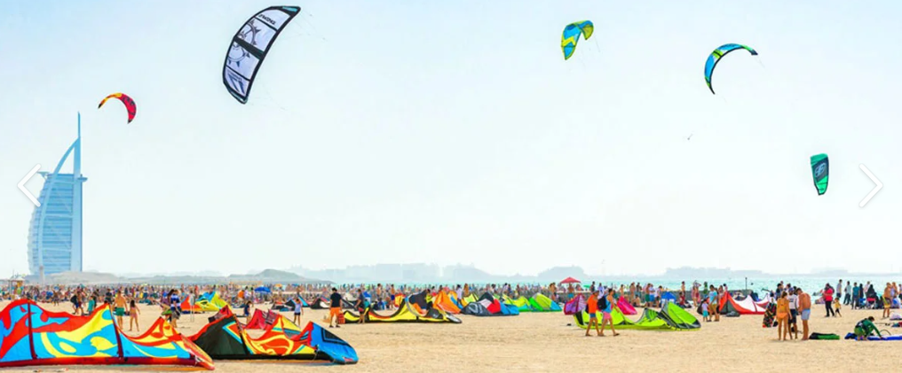
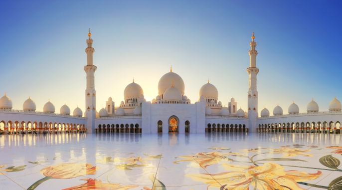

Burj Khalifa

Burj Khalifa: Rising gracefully above Dubai, Burj Khalifa is the tallest building in the world at 828 meters. Completed in 2010, it is an architectural marvel offering breathtaking views of the city, desert, and Persian Gulf.
History & Facts: Construction began in 2004 and took six years to complete. It has 163 floors, 57 elevators, and the world’s highest observation deck at 555 meters.
Global Village

Global Village: Dubai’s ultimate cultural festival, featuring international pavilions, performances, and cuisine. Visitors can experience multiple countries in one evening.
Fun Fact: Millions attend each season, making it one of the largest cultural events in the world.
Kite Beach

Kite Beach: Lively golden-sand beach along Dubai’s coast, popular for kitesurfing, jogging, and family activities. A hotspot for fitness and fun.
Fun Fact: Features sports zones, playgrounds, and food trucks along the beach.
Sheikh Zayed Grand Mosque

Sheikh Zayed Grand Mosque: Iconic mosque in Abu Dhabi with white marble, intricate mosaics, and grand domes. A masterpiece of Islamic architecture.
Fun Fact: Can hold 40,000 worshippers and has one of the world’s largest chandeliers and hand-knotted carpets.